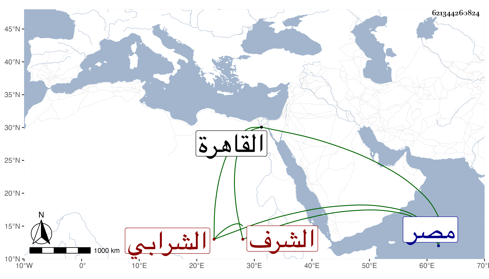

0902Sakhawi.DawLamic.ITO20230111-ara1.EIS1600.621344260824
Biography ID: 621344260824
603
محمد بن علي الشرف الحبري الشرابي أبوه . باشر في أعوان الحكم للمالكية ثم وقعت له واقعة سجن بسببها ثم حكم بحقن دمه وأطلق ثم عمل في دكان سكريا ثم توصل حتى عمل حسبة مصر ثم القاهرة ، وكان عاميا جلفا قليل الخير كثير الشر . مات في ربيع الأول سنة ثلاث وعشرين . ذكره شيخنا في إنبائه . وقال غيره أنه كان يرمي بعظائم .
